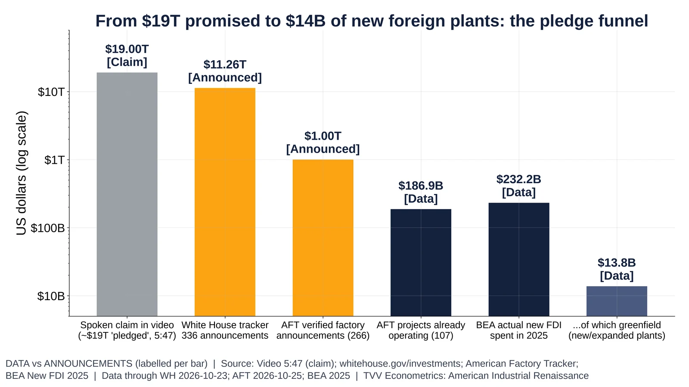
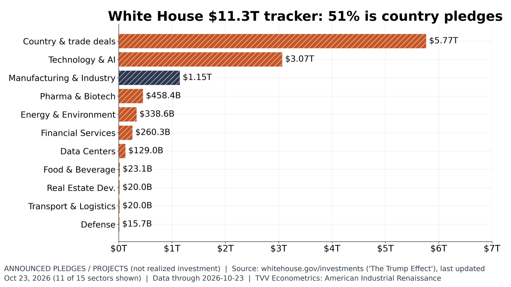
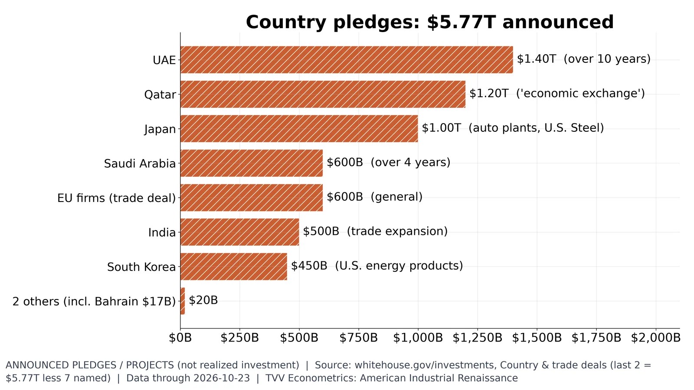
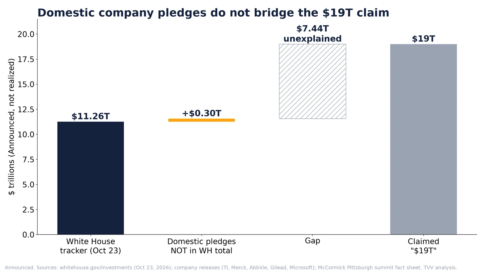
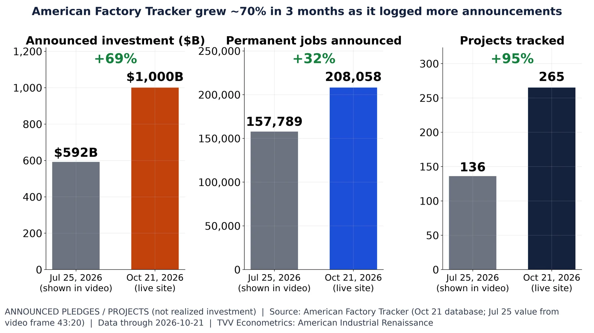
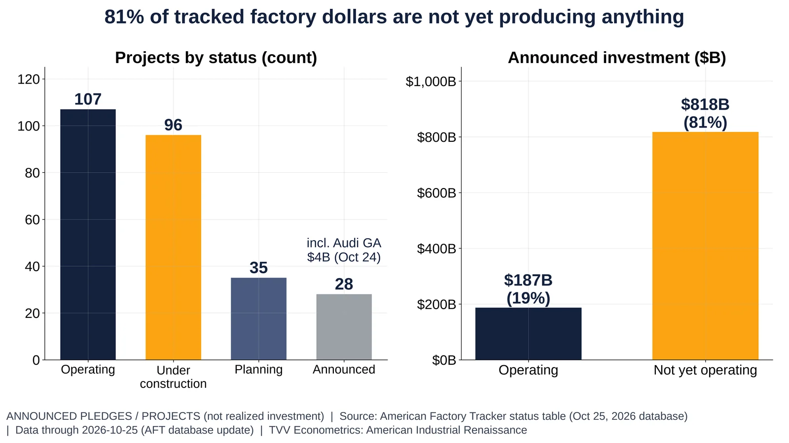
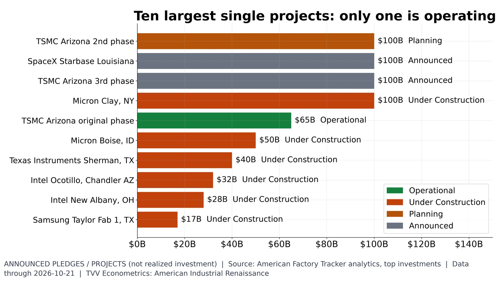
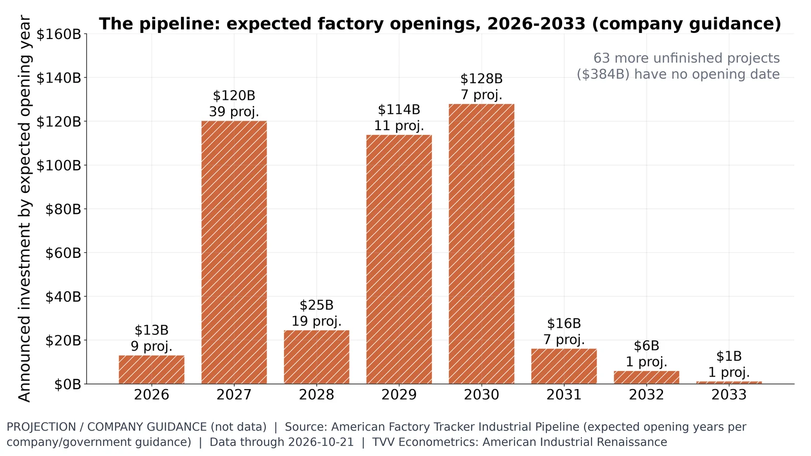

1. Total Investment Pledges

Claims ($19T) and announcements ($11.26T) dwarf realized 2025 new FDI ($232B; greenfield $13.8B). WH, AFT, BEA.
Mixed | Data date: WH 2026-10-23; AFT 2026-10-21; BEA 2025
- Sep 3, 2026: $19T spoken claim; no published breakdown https://www.cnn.com/2026/09/03/politics/fact-check-vance-trump-trillions-invested
- Oct 23, 2026: WH tracker $11.26T (Announced) https://www.whitehouse.gov/investments/
- Oct 21, 2026: AFT tracked $1.00T, $186.9B operating https://americanfactorytracker.com/
- 2025: BEA new FDI spent $232.2B; greenfield $13.8B (Data) https://www.bea.gov/news/2026/new-foreign-direct-investment-united-states-2025
Sources: https://www.whitehouse.gov/investments/ https://americanfactorytracker.com/ https://www.bea.gov/news/2026/new-foreign-direct-investment-united-states-2025 https://www.youtube.com/watch?v=bf0m2g7GYrI&t=2600s

WH tracker: $11.26T in 336 announcements; country deals $5.77T, manufacturing $1.15T. Announced, Oct 23, 2026.
Announced | Data date: 2026-10-23
- Oct 23, 2026: 336 announcements, $11.26T (Announced) https://www.whitehouse.gov/investments/
- Country and trade deals $5.77T, 51% of total (Announced) https://www.whitehouse.gov/investments/
- Manufacturing $1.15T (Announced) https://www.whitehouse.gov/investments/
Sources: https://www.whitehouse.gov/investments/ https://www.whitehouse.gov/releases/2026/03/trump-effect-a-running-list-of-new-u-s-investment-in-president-trumps-second-term/

Nine country pledges total $5.77T: UAE $1.4T, Qatar $1.2T, Japan $1T. Announcements, not realized. WH, Oct 2026.
Announced | Data date: 2026-10-23
- Oct 23, 2026: nine country pledges, $5.77T (Announced) https://www.whitehouse.gov/investments/
- UAE $1.4T over 10 years; Qatar $1.2T; Japan $1T (Announced) https://www.whitehouse.gov/investments/
- Pledges are multiyear and partly purchases, not FDI (Interpretation) https://www.whitehouse.gov/investments/
Sources: https://www.whitehouse.gov/investments/ https://www.whitehouse.gov/releases/2026/03/trump-effect-a-running-list-of-new-u-s-investment-in-president-trumps-second-term/

WH tracker $11.26T plus $0.30T new domestic pledges reaches $11.56T, $7.44T short of the $19T claim.
- Domestic company pledges $3.19T gross, 23 pledges (Announced) https://www.whitehouse.gov/investments/
- Only $295.7B not already in the WH total (Announced): TI https://www.ti.com/about-ti/newsroom/news-releases/2025/texas-instruments-plans-to-invest-more-than--60-billion-to-manufacture-billions-of-foundational-semiconductors-in-the-us.html · Merck https://www.merck.com/news/merck-reaches-agreement-with-u-s-government-to-expand-access-to-medicines-and-lower-costs-for-americans/ · AbbVie https://news.abbvie.com/2026-01-12-AbbVie-and-Trump-Administration-Reach-Agreement-to-Improve-Access-and-Affordability-for-Americans · Gilead https://www.gilead.com/company/company-statements/2025/gilead-us-investment-to-create-43-billion-value-to-us-economy · Microsoft https://blogs.microsoft.com/on-the-issues/2025/01/03/the-golden-opportunity-for-american-ai/ · Blackstone, Enbridge https://www.mccormick.senate.gov/news/press-releases/fact-sheet-more-than-90-billion-in-investments-announced-at-senator-mccormicks-pennsylvania-energy-and-innovation-summit/
- WH $11.26T + $0.30T = $11.56T; $7.44T gap to $19T unexplained (Announced) https://www.cnn.com/2026/09/03/politics/fact-check-vance-trump-trillions-invested
- Oct 23, 2026: Apple, Meta, Nvidia, Stargate, Micron, IBM, Pfizer, J&J, Lilly pledges already listed in the WH tracker (Data, TVV parse) https://www.whitehouse.gov/investments/

Tracked announced investment rose from $591.84B (Jul 25) to $1.00T (Oct 21); projects 136 to 265. AFT.
Announced | Data date: 2026-10-21
- Jul 25, 2026: tracker database showed $591.84B, 157,789 jobs, 136 projects (Announced) https://www.youtube.com/watch?v=bf0m2g7GYrI&t=2600s
- Oct 21, 2026: $1.00T, 208,058 jobs, 265 projects (Announced) https://americanfactorytracker.com/
- Projects nearly doubled in under three months (Data, derived)
Sources: https://americanfactorytracker.com/ https://www.youtube.com/watch?v=bf0m2g7GYrI&t=2600s

Only $187B (19%) of $1.00T tracked investment is operating; 158 projects still pending. AFT, Oct 21, 2026.
Announced | Data date: 2026-10-21
- Oct 21, 2026: 107 projects operating, $186.9B (Data) https://americanfactorytracker.com/forecast
- 96 under construction, $415.5B; 35 planning, $161.0B (Announced) https://americanfactorytracker.com/forecast
- 27 announced only, $237.0B (Announced) https://americanfactorytracker.com/forecast
Sources: https://americanfactorytracker.com/

Of the ten largest tracked projects ($632B), only TSMC's original Arizona phase operates. AFT, Oct 21, 2026.
Announced | Data date: 2026-10-21
- Oct 21, 2026: ten largest projects total $632B (Announced) https://americanfactorytracker.com/analytics
- Only TSMC's original Arizona phase operates (Data) https://americanfactorytracker.com/forecast
- Micron Clay NY $100B under construction, opening 2030 (Projection) https://americanfactorytracker.com/forecast

Company guidance: $429.7B across 95 projects opening 2026-2033; 2027, 2029, 2030 peaks. Projection, AFT, Oct 2026.
Projection | Data date: 2026-10-21
- Oct 21, 2026: 95 unfinished projects give opening years, $429.7B (Projection) https://americanfactorytracker.com/forecast
- 2027: 39 projects, $120.3B; 2030: 7 projects, $128.0B (Projection) https://americanfactorytracker.com/forecast
- 64 more projects, $383.8B, give no year (Data) https://americanfactorytracker.com/forecast